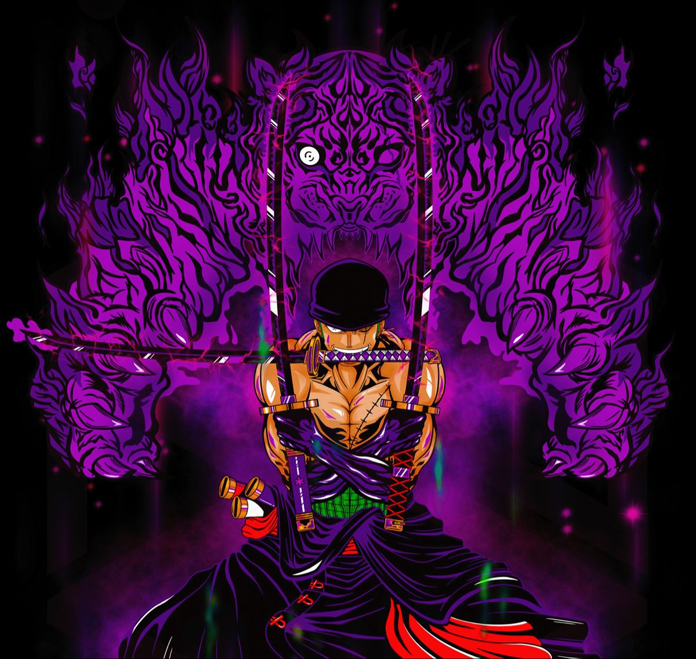
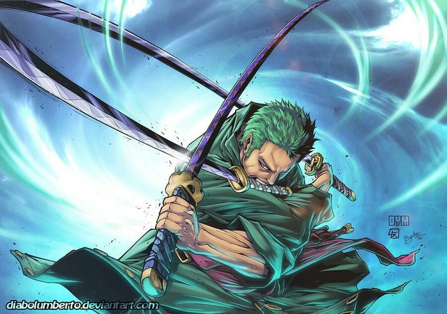
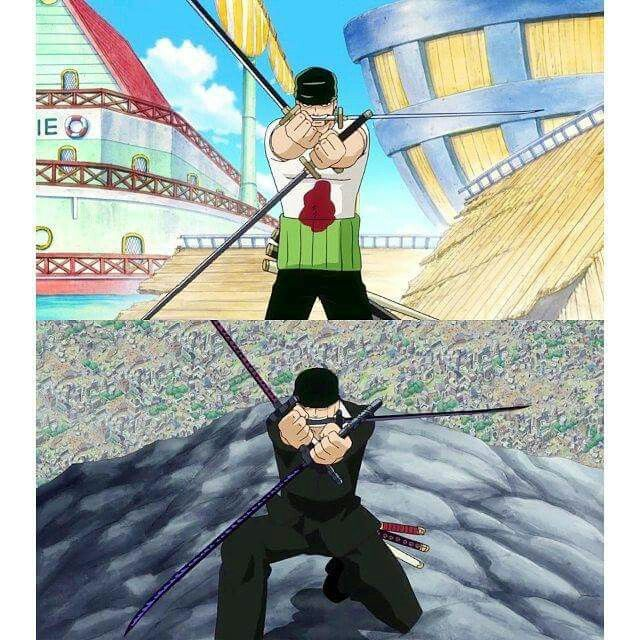
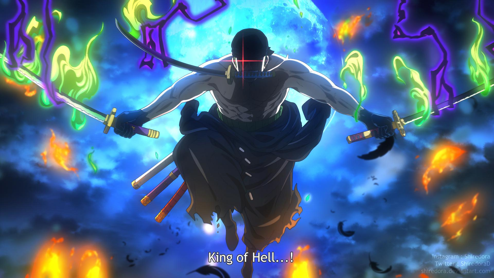
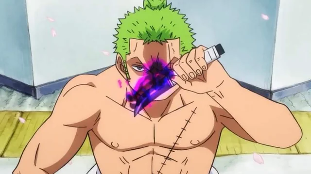

ZORO
ZORO
ZORO
ZORO
Три легендарных клинка и боевые техники, которыми он сокрушает врагов

Последний дар Куины. Белый клинок с белым свечением. Символ клятвы. Зоро никогда не расстаётся с этим мечом. Он носит его как напоминание о своей цели и как обещание стать сильнейшим.

Фиолетовый клинок с аурой проклятия. Приносит смерть владельцу, но Зоро подчинил его своей волей. Его фиолетовое свечение — символ силы и контроля. Доказывает, что даже проклятие можно обратить в силу.

Зелёное свечение, высасывает Хаки. Способен разрубить небо. Получен в Вано. Это самый мощный меч Зоро, который требует полного контроля над Хаки. Ключ к его будущей силе.
Его главные приёмы, которые сокрушали врагов

«Демонический разрез» — коронная техника Зоро. Он скрещивает три меча и наносит сокрушительный удар, который пронзает врага насквозь.

«Драконий вихрь» — Зоро создаёт торнадо из мечей, которое поднимает врага в воздух и разрезает его на части.

«Три тысячи миров» — техника, при которой Зоро вращает мечи и наносит удар, разрезающий всё на своём пути.

Финальная техника, которую Зоро использовал против Кинга. Она усиливает его Хаки до предела, делая удар смертельным.

«Испускание Хаки» — Зоро концентрирует свою волю в мечах, создавая мощные воздушные разрезы.

Асура — демоническая форма Зоро, в которой он создаёт 9 рук и 9 голов. Это не дьявольский плод, а проявление его духа и воли. Впервые использовал против Каку в Эниес Лобби, а в Вано усилил до «Короля Ада». Эта форма делает его почти непобедимым.